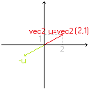
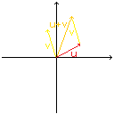
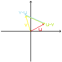
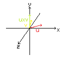
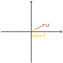

1.5 变换
这一章涉及诸多数学知识，不理解这些数学知识也没关系，但至少学会写代码和运用！
详细教程
我们已经可以创建静态物体了，那么，怎么让物体移动呢？
我们可以每帧改变网格缓冲数据，但这太麻烦了。
更好的方法是使用矩阵和向量，在顶点着色器中进行位置变换。
向量
向量，是一些数字（分量）所组成的一维数组，也可以看作空间中的有方向有大小的箭头。
通过以下代码创建一个向量（就像在着色器里那样）：vecX v;
其中，X为分量的个数。
向量可以用于表示方向或位置（坐标）。向量的箭头尾部通常被放在原点。
向量取反：获得方向相反的向量

-u
向量相加：将两个向量（箭头）首尾相接

u+v
向量相减：
u-v 代表从v箭头的头部指向u的

u-v v-u
向量点乘：求两向量夹角的余弦值与二者长度的乘积
：
dot(u,v)
向量叉乘：（仅用于3维（三分量）向量）求与两向量都垂直的向量

cross(u,v)
向量标准化：将向量长度改为1，方向不变

~u
矩阵
矩阵是用于存储变换的二维数组。
通过以下代码创建一个矩阵（就像在着色器里那样）：matX v;
其中，X为矩阵的行数和列数。声明的矩阵会自动初始化为单位矩阵，代表“没有任何变换”。
矩阵乘法
这很复杂，但是你并不用知道它怎么算，只要会 m1*m2 就行了。这可以用来组合多个变换。
矩阵也可以乘向量，从而将此向量进行变换。
需要注意的是，矩阵乘法不满足交换律，或者说，乘的顺序会影响结果。
一般来说，我们按照从右到左的顺序来写：
...*m3*m2*m1*v
把向量放在最右边，随后从右至左依次乘矩阵。右边的矩阵先用于向量变换，左边的最后。
如果只有一个矩阵，也可以这样写：
v*=m; // v=m*v
变换
我们可以通过以下代码来声明一个变换对象：
trans_t tr;
然后调用以下函数/赋值以下成员来设置变换：
tr.trans(vec3 在三个轴上的位移);
：
设置在X,Y,Z三个方向上的平移距离。
bool tr.rad
：
是否使用弧度制。默认使用角度制。
tr.rot(vec3 轴,float 角度);
：
绕某个轴旋转。(遵循右手定则，大拇指与轴向量指向同一方向，右手四指卷曲方向即为旋转方向)
tr.rote(vec3 欧拉角_顺序xyz, string 旋转顺序="YXZ");
：
按欧拉角旋转，依照字符串规定的顺序绕对应轴旋转一定度数。
tr.scale(vec3/float 缩放倍数);
：
按给定倍数缩放。当值为float时，为等比缩放。
需要说明的是，修改会覆盖相应属性，两种旋转不能共存。为消除不利影响，无论函数调用顺序如何，均会按照 缩放→旋转→平移 的顺序进行。
实践
例1.
把一个向量(1,0,0)位移(1,1,0)个单位。
注意，我们通常使用 vec4 存储位置向量（w 分量始终为 1.0）。
完整代码：
#include "header/OpenGL.h"
using namespace std;
int main(){
vec4 vec(1.0f,0.0f,0.0f,1.0f);
trans_t tr;
tr.trans(vec3(1.0f,1.0f,0.0f));
vec*=tr.matr(); // 即 vec=tr.matr()*vec;
cout<<vec.x<<" "<<vec.y<<" "<<vec.z; // output 2 1 0
return 0;
}
例2.
在 1.4课 eg2 基础上，把箱子缩放 0.5 倍，然后绕Z轴旋转90度。
首先，我们声明一个 trans_t ：
trans_t tr;
其次，缩放并旋转：
tr.scale(0.5f); // or tr.scale(vec3(0.5f,0.5f,0.5f));
tr.rot(vec3(0.0f,0.0f,1.0f),90.0f); // or tr.rote(vec3(0.0f,0.0f,90.0f));
然后在顶点着色器中声明 uniform 并乘以原位置：
uniform mat4 tr;
gl_Position=tr*vec4(v_pos.x,v_pos.y,v_pos.z,1.0);
最后在程序中传入矩阵：
sd.setm4("tr",tr.matr());
eg2。
在着色器中无法使用的语句及替代
vec*=mat;
~vec
v1^v2
vec=mat*vec;（顺序不能错）
normalize(vec)
angle(v1,v2)（需要#include <math.ash>）
着色器中的 include
在着色器中也可以使用
#include 语句。用法基本与C++类似，但是：
#include <...> 源码的路径仅能为 sd_lib\ ，不支持修改。
#include "..." 无法直接当作
#include <...> 使用。
文件扩展名：
*.ash
*.vsh
*.fsh
适用于所有着色器
仅适用于顶点着色器
仅适用于片段着色器
练习1.
在 eg2 基础上，取消缩放，把箱子移到右下角，随时间不断旋转（当前时间为旋转的弧度值）。
本章总结
向量 是一维数组，可看作有方向和大小的箭头。
矩阵 是二维数组，用于存储变换。
向量运算（库中支持）
夹角（角度制）
：
u^v 返回两向量夹角（0°~180°）
叉乘（仅3维）
：
cross(u,v) 得到与两者都垂直的向量
标准化
：
~u 将向量长度变为1，方向不变（库自定义）
矩阵
声明
：
mat2 / mat3 / mat4 m;
乘法
：
m1 * m2 组合变换（不满足交换律）
乘向量
：
m * v 或 v *= m 对向量应用变换
书写顺序
：
从右到左：... * m3 * m2 * m1 * v（最右边先作用）
变换对象（trans_t）
旋转（轴角）
：
tr.rot(vec3 轴, float 角度); 遵循右手定则
旋转（欧拉角）
：
tr.rote(vec3 欧拉角,bool 旋转顺序="YXZ");
缩放
：
tr.scale(vec3 各轴倍数); 或 tr.scale(float 统一倍数);
角度制/弧度制
：
tr.rad = true/false; 默认 false（角度制）
获取矩阵
：
mat4 m = tr.matr();
重要顺序
无论调用函数的顺序如何，最终组合的顺序固定为：缩放 → 旋转 → 平移。
两种旋转（轴角 / 欧拉角）不能共存，最后一次调用覆盖之前的设置。
在着色器中使用矩阵
顶点着色器
：
声明 uniform mat4 tr;，然后 gl_Position = tr * vec4(顶点坐标, 1.0);
C++ 传递
：
sd.setm4("tr", tr.matr()); （每帧如有变化则每帧调用）
在着色器中无法使用的语句及替代
vec*=mat;
~vec
v1^v2
vec=mat*vec;（顺序不能错）
normalize(vec)
angle(v1,v2)（需要#include <math.ash>）
下一节